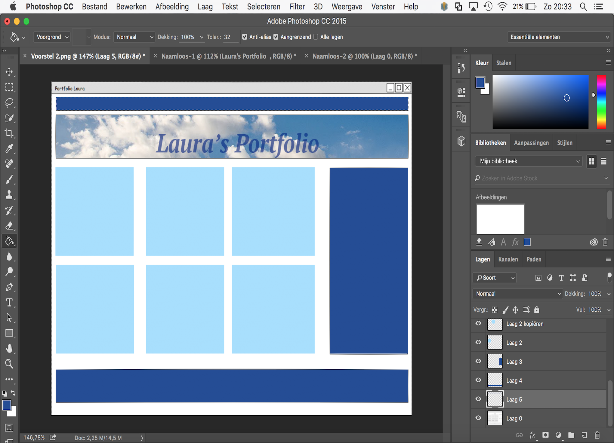

INDIVIDUELE OPDRACHT PENCIL & PHOTOSHOP
Opdracht: Het was de bedoeling om verschillende webdesigns uit te werken in Pencil, en vervolgens een van deze designs uit te werken in Photoshop CC.
Klik hier om naar het verslag te gaan (PDF)
Opdracht: Het was de bedoeling om verschillende webdesigns uit te werken in Pencil, en vervolgens een van deze designs uit te werken in Photoshop CC.
Klik hier om naar het verslag te gaan (PDF)